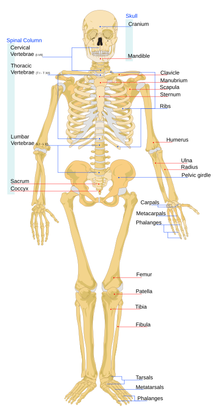
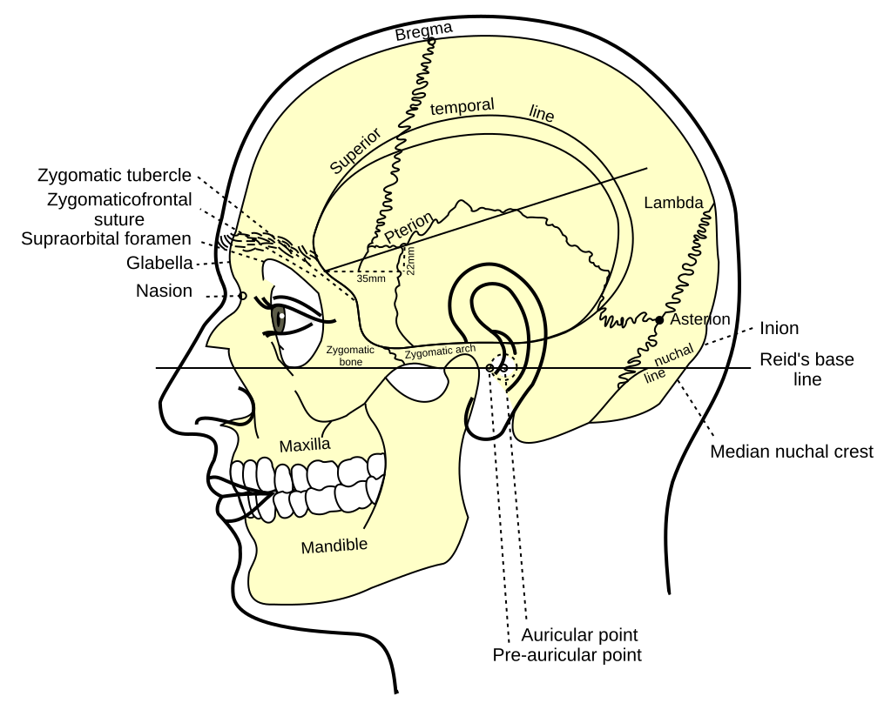
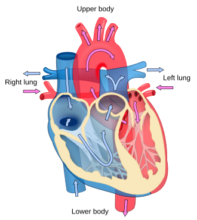
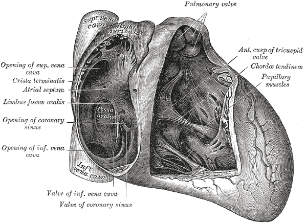
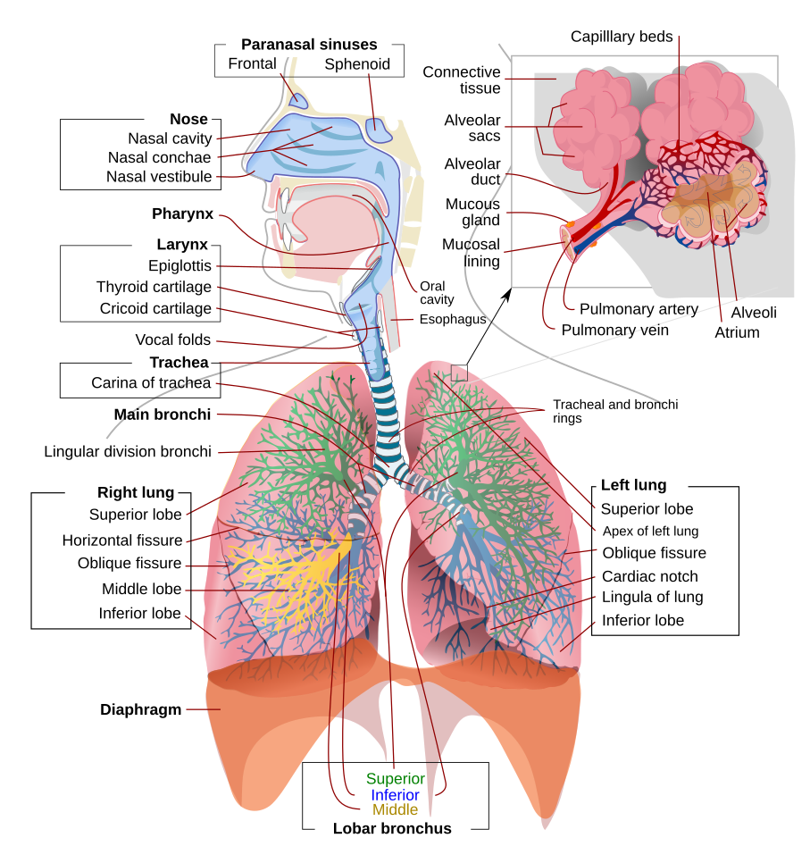
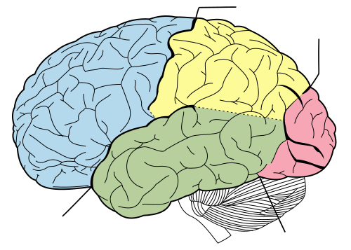
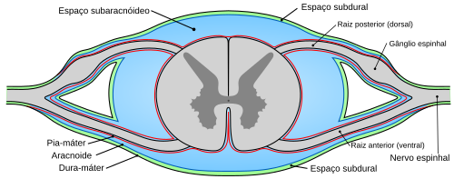
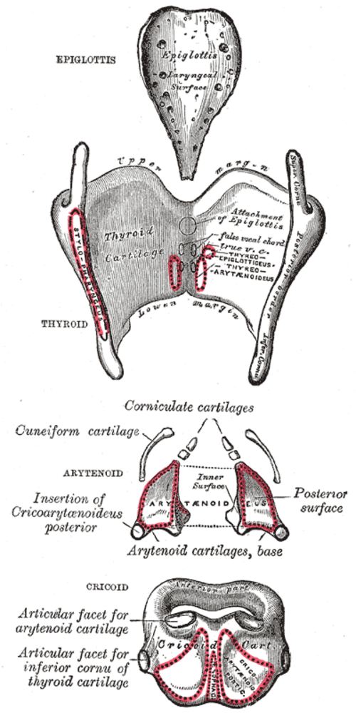
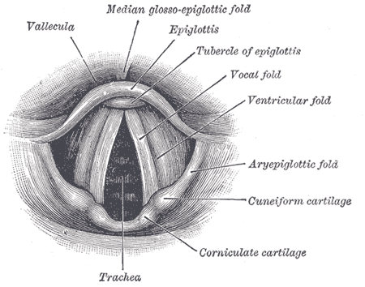
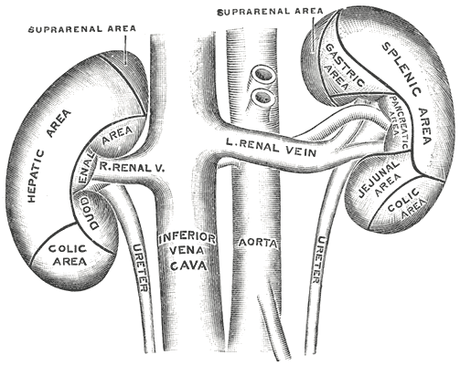

Recupere antes de reler
Feche a ficha e escreva o circuito do sangue ou os doze nervos cranianos de cabeça. A dificuldade de puxar a resposta é o estudo, não um sinal de que você não sabe nada.
Novo tema · revisão livre
Uma mesa de estudo para revisar o corpo humano, treinar memória e saber onde ler de graça. As fichas são um roteiro. Os livros, atlas e cursos linkados são o material completo.
Isto é material de estudo, não consulta, diagnóstico ou conduta. Não substitui graduação, preceptor, diretriz ou exame. Rouquidão, falta de ar, dor no peito, engasgo frequente ou perda súbita de fala pedem avaliação profissional. Em emergência, SAMU 192.

Ler uma vez não gruda. O caminho que funciona é curto: tente lembrar antes de reler, erre no simulado, volte só no trecho que falhou e repita no dia seguinte.
Feche a ficha e escreva o circuito do sangue ou os doze nervos cranianos de cabeça. A dificuldade de puxar a resposta é o estudo, não um sinal de que você não sabe nada.
Um coração com quatro câmaras, setas e o nome das valvas ensina mais do que grifar um atlas. Compare o desenho com a prancha depois, não durante.
Volte amanhã, em três dias e na semana seguinte. O Anki faz isso de graça. Os cartões desta página servem para a primeira leva.
Faça o simulado inteiro antes de abrir a ficha. No fim, a página lista o que você errou e a explicação. A melhor marca fica salva neste navegador.
A graduação da saúde gira em torno dos sistemas. A fonoaudiologia mora sobretudo na cabeça, no pescoço, na audição, na linguagem e na deglutição, mas precisa do corpo inteiro para fazer sentido.
Posição anatômica, planos, eixos e cavidades.
AnatomiaAxial, apendicular, coluna e os ossos que caem em prova.
AnatomiaTipos de tecido muscular, diafragma e mastigação.
FisiologiaQuatro câmaras, valvas, marcapasso e o que artéria realmente significa.
FisiologiaVias aéreas, alvéolos, pregas vocais e nervos da voz.
SentidosOuvido externo, médio e interno, tuba auditiva e diapasão.
NeuroMeninges, doze pares cranianos e o modelo clássico das afasias.
VíscerasBile, néfron, insulina e o que não confundir entre os órgãos.
FonoaudiologiaAudiologia, linguagem, voz, motricidade, disfagia e fluência.
As pranchas abaixo são de domínio público ou de licença livre. Clique para ampliar. Várias legendas originais estão em inglês: a legenda em português diz o que procurar.










Texto curto, escrito para lembrar. Quando a ficha acabar, abra o livro gratuito do mesmo sistema. A profundidade mora lá, não aqui.
Toda descrição parte da posição anatômica: pessoa em pé, face e olhar para a frente, braços ao lado do corpo, palmas voltadas para a frente, pés juntos e paralelos. Sem esse acordo, medial e lateral trocam de lugar no antebraço.
O plano sagital separa direita e esquerda. O sagital mediano passa no meio. O plano coronal, ou frontal, separa anterior e posterior. O plano transversal, ou axial, separa superior e inferior. Anterior também se chama ventral. Posterior também se chama dorsal. Proximal fica perto da raiz do membro. Distal fica longe.
O adulto tem cerca de 206 ossos. O número não é uma lei da natureza: sesamoides e ossos extras da sutura mudam a conta. O esqueleto axial é crânio, coluna, costelas e esterno. O apendicular é cinturas escapular e pélvica mais os membros.
A coluna móvel tem 7 vértebras cervicais, 12 torácicas e 5 lombares. O sacro funde cinco peças. O cóccix funde de três a cinco. Há doze pares de costelas. Os sete primeiros são as verdadeiras e se ligam ao esterno por cartilagem própria. O fêmur é o osso mais longo. O estribo é o menor. O hioide é o osso que não se articula com outro osso e serve de referência para língua, faringe e laringe.
Há três músculos de verdade no corpo: esquelético, que é voluntário e estriado; cardíaco, estriado e involuntário; e liso, involuntário, na parede das vísceras e dos vasos. No esquelético, a origem é a extremidade mais fixa, a inserção é a que se desloca, e o tendão liga o ventre ao osso.
Agonista faz o movimento. Antagonista faz o contrário. Sinergista ajuda. Fixador estabiliza a origem. O diafragma é o músculo que mais vale a pena gravar primeiro: é o principal da inspiração em repouso e o nervo frênico, de C3 a C5, o comanda. Na mastigação, masseter, temporal e pterigóideos são do ramo mandibular do trigêmeo, não do facial.
O coração tem dois átrios e dois ventrículos. O lado direito recebe o sangue do corpo e manda aos pulmões. O lado esquerdo recebe o sangue dos pulmões e manda ao corpo. Artéria é vaso que sai de um ventrículo. Veia é vaso que chega a um átrio. Por isso a artéria pulmonar leva sangue pobre em oxigênio, e as veias pulmonares trazem sangue oxigenado.
Sístole ventricular é contração e ejeção. Diástole é enchimento. O nó sinoatrial, no átrio direito, é o marcapasso. O estímulo segue ao nó atrioventricular, ao feixe de His, aos ramos e às fibras de Purkinje. As artérias coronárias nascem da aorta e alimentam o próprio coração.
O sangue tem plasma e elementos figurados. Hemácias carregam oxigênio pela hemoglobina. Leucócitos defendem. Plaquetas começam a hemostasia. Grupo ABO e fator Rh são a base da transfusão, e a compatibilidade não se decide de memória numa emergência.
O ar entra pelo nariz ou pela boca, cruza a faringe, passa pela laringe, desce a traqueia e chega aos brônquios, bronquíolos e alvéolos. Até os bronquíolos terminais o caminho é de condução. A troca acontece nos alvéolos, por difusão, através de uma parede finíssima. Os pneumócitos tipo II fabricam surfactante, que reduz a tensão superficial. Os tipo I formam essa parede de troca.
Na inspiração em repouso o diafragma desce, o volume do tórax sobe e a pressão dentro do pulmão cai. O ar entra porque a pressão de fora ficou maior. A pleura visceral reveste o pulmão. A parietal reveste a parede. Entre elas há um filme líquido, e a pressão pleural negativa ajuda o pulmão a permanecer expandido.
A laringe protege a via aérea, conduz o ar, produz a voz e fecha para o esforço. As cartilagens grandes são tireóidea, cricóidea e aritenóideas, mais a epiglote. Corniculadas e cuneiformes completam o conjunto. As pregas vestibulares são as falsas. As pregas vocais verdadeiras ficam abaixo e vibram na fonação.
| Músculo | Ação | Nervo |
|---|---|---|
| Cricoaritenóideo posterior | Abre as pregas. É o único abdutor. | Laríngeo recorrente |
| Cricoaritenóideo lateral, tireoaritenóideo e interaritenóideo | Fecham a glote. | Laríngeo recorrente |
| Cricotireóideo | Alonga e tensiona a prega. Sobe o tom. | Laríngeo superior, ramo externo |
O recorrente esquerdo contorna o arco da aorta. O direito contorna a artéria subclávia. Cirurgia de tireoide e de tórax importa para a voz por causa desse caminho. O ramo interno do laríngeo superior leva a sensibilidade da laringe acima das pregas.
Orelha é o nome anatômico. Ouvido é o nome de todo dia. A externa vai do pavilhão à membrana timpânica. A média guarda martelo, bigorna e estribo, e a tuba auditiva a liga à rinofaringe para igualar a pressão. A interna tem a cóclea, que ouve, e o vestíbulo com os canais semicirculares, que informam equilíbrio. Os dois seguem pelo nervo vestibulococlear.
O som faz o tímpano vibrar, os ossículos ampliam o movimento até a janela oval, a perilinfa se desloca e o órgão de Corti transforma isso em sinal neural. Perda condutiva é problema de ouvido externo ou médio. Perda neurossensorial é da cóclea ou do nervo. Perda mista junta as duas.
O sistema nervoso central é encéfalo e medula. O periférico é feito dos nervos cranianos e espinais. O autônomo se divide em simpático e parassimpático. As meninges, de fora para dentro, são dura-máter, aracnoide e pia-máter. O liquor fica no espaço subaracnóideo.
Há 12 pares de nervos cranianos e 31 pares de nervos espinais: 8 cervicais, 12 torácicos, 5 lombares, 5 sacrais e 1 coccígeo. Para a fala, a deglutição e a audição, grave sobretudo o V, o VII, o VIII, o IX, o X e o XII.
| Par | Nome | Para gravar |
|---|---|---|
| I | Olfatório | Olfação. Sensitivo. |
| II | Óptico | Visão. Sensitivo. |
| III | Oculomotor | Maioria dos músculos do olho, pálpebra e pupila. |
| IV | Troclear | Músculo oblíquo superior. |
| V | Trigêmeo | Sensibilidade da face e mastigação, pelo V3. |
| VI | Abducente | Músculo reto lateral do olho. |
| VII | Facial | Mímica, lágrima, gosto nos dois terços anteriores da língua e estapédio. |
| VIII | Vestibulococlear | Audição e equilíbrio. |
| IX | Glossofaríngeo | Gosto no terço posterior, sensibilidade da faringe, aferência do reflexo de vômito. |
| X | Vago | Palato, faringe, laringe e vísceras torácicas e abdominais. |
| XI | Acessório | Esternocleidomastóideo e trapézio. |
| XII | Hipoglosso | Músculos da língua. Na lesão, a língua desvia para o lado fraco. |
No modelo clássico, a área de Broca fica no lobo frontal inferior do hemisfério dominante: a fala sai pouco fluente e a compreensão está relativamente melhor. A área de Wernicke fica no temporal: a fala é fluente, o sentido se perde e a compreensão piora. Disartria é falha motora da fala. Afasia é falha de linguagem. Apraxia de fala é falha de planejamento motor, com a linguagem em si mais preservada. O cérebro real é uma rede, e o modelo de duas caixas existe para a revisão não se perder.
O tubo digestório vai da boca ao ânus: boca, faringe, esôfago, estômago, intestino delgado e intestino grosso. As glândulas anexas são salivares, fígado, vesícula e pâncreas. O fígado produz a bile. A vesícula a armazena e a concentra. A bile emulsifica gordura. O pâncreas exócrino manda enzimas ao duodeno. O pâncreas endócrino, nas ilhotas, faz insulina nas células beta e glucagon nas células alfa.
O rim filtra o plasma, reabsorve o que o corpo quer guardar e secreta o que precisa sair. A unidade desse trabalho é o néfron, com corpúsculo e túbulos. Ureter conduz urina à bexiga. Uretra a conduz para fora. O baço não é órgão digestório: filtra sangue e participa da imunidade.
A fonoaudiologia estuda comunicação humana e funções orais: audição, linguagem oral e escrita, fala, voz, fluência, motricidade orofacial e deglutição, da maternidade ao envelhecimento, na escola, no consultório e no hospital. O recorte abaixo segue as áreas que a graduação e os periódicos da área de fato separam.
Estuda detecção, reconhecimento e compreensão do som, e também o equilíbrio periférico. A triagem do recém-nascido, o teste da orelhinha, é obrigatória nas maternidades brasileiras. O exame de entrada costuma ser a emissão otoacústica. Se a conduta pede mais, entra o potencial evocado auditivo de tronco encefálico. Falha não é diagnóstico: é porta para reteste.
Na revisão: audiometria tonal e vocal, imitanciometria, mascaramento, perda condutiva, neurossensorial e mista, aparelho de amplificação e a ideia do implante coclear, que tem indicação especializada e não é um aparelho mais forte.
Linguagem não é só lista de palavras. Há fonologia, vocabulário, morfossintaxe, discurso e pragmática, na fala e na escrita. Balbucio, primeiras palavras por volta de um ano e combinações no segundo ano são marcos de estudo, não um cronômetro. A variação entre crianças é grande. Atraso pede avaliação, não comparação de vídeo.
No adulto, afasia, demência e traumatismo mudam a linguagem de outro jeito. Não chame de afasia uma disartria, nem de atraso uma diferença de dialeto ou de língua de exposição.
Voz é qualidade, tom, intensidade e ressonância produzidos na laringe e moldados no trato vocal. Rouquidão, soprosidade, aspereza e tensão são descrições, não diagnósticos. A escala GRBAS marca grau, rugosidade, soprosidade, astenia e tensão. A RASATI, muito usada no Brasil, acrescenta a instabilidade.
Hidratação e menos grito ajudam a cuidar da voz saudável. Rouquidão que passa de cerca de duas semanas, sobretudo com dor, fumo ou dificuldade de engolir, precisa de avaliação, em geral com exame da laringe. Sussurro tenso não é descanso.
Olha lábios, língua, bochechas, palato, articulação temporomandibular, respiração, sucção, mastigação e fala. A respiração oral pode ser hábito ou consequência de nariz entupido, adenoide ou rinite. A causa muda a conduta, e a fono não substitui o otorrinolaringologista.
Frênulo lingual se avalia pela função: elevação, protrusão, sucção, fala e alimentação. O formato do freio sozinho não conta a história. A Sociedade Brasileira de Fonoaudiologia publica materiais abertos sobre respiração oral e motricidade.
Deglutição segura e eficiente tem fases de estudo: antecipatória, oral preparatória, oral de propulsão, faríngea e esofágica. A faríngea é reflexa. O véu sobe, a laringe sobe e fecha, e o bolo desce. Penetração é entrada no vestíbulo da laringe sem passar das pregas. Aspiração passa das pregas. Aspiração silenciosa não tosse.
Videofluoroscopia e videoendoscopia da deglutição são exames, não técnicas de casa. Texturas de dieta seguem um padrão internacional, o IDDSI. Não invente consistência: use o quadro oficial quando for a hora de estudá-lo a fundo.
Gagueira do desenvolvimento traz repetições, prolongamentos e bloqueios, muitas vezes com tensão e esquiva de palavras. A taquifemia é outra alteração da fluência: a fala fica rápida, irregular e com trechos pouco inteligíveis, e a pessoa pode perceber menos o próprio padrão.
Na conversa, não complete a frase, não mande respirar no meio do bloqueio e não transforme o turno num teste. Tempo e contato visual comum já são uma boa base. O Instituto Brasileiro de Fluência tem materiais abertos para família e escola.
Na escola, a fono entra em linguagem, leitura, escrita, voz do professor, ruído e inclusão. Na saúde coletiva, entra triagem, território, creche, cuidado de quem usa a voz para trabalhar e o desenho do cuidado no SUS. Não é uma versão menor da clínica: muda a pergunta, do indivíduo isolado para o grupo e o serviço.
No hospital, a fono encontra disfagia, voz depois de intubação, traqueostomia, comunicação alternativa e o recém-nascido que ainda não consegue mamar com segurança. A Fiocruz tem formação aberta sobre alterações sensório-motoras orais e disfagia no recém-nascido e no lactente, pensada para o trabalho em equipe na UTI neonatal.
Tudo abaixo abre sem pagamento. Alguns pedem conta grátis. Curso com vaga fecha e reabre: se a turma não estiver aberta, o portal continua sendo o lugar certo. Livro clássico pago, como Netter e Moore, não está aqui.
Livro completo, revisado, online e em PDF. É o melhor texto gratuito de anatomia e fisiologia por sistemas. Está em inglês.
Outro livro aberto, também por sistemas, com leitura direta no navegador. Inglês.
Prateleira aberta com anatomia, fisiologia, clínica e áreas vizinhas. Bom para cruzar um capítulo com outro.
E-book de Braz José do Nascimento Júnior, UNIVASF, 2020, em acesso aberto para estudo. Linguagem direta, útil para cursos da saúde. PDF.
O texto e as pranchas de Henry Gray e Henry Vandyke Carter no Internet Archive. É anatomia histórica, não a edição moderna paga. Ainda ensina forma e relação.
Microbiologia para infecção e defesa. Biologia para célula, genética e a base que a fisiologia usa o tempo todo.
Livros e documentos gratuitos do NIH, inclusive StatPearls. Para artigos, use o PubMed e o texto completo do PubMed Central.
Catálogo com milhares de títulos, muitos em acesso aberto e em português. Também vale procurar no DOAB e na OAPEN.
Referência gratuita em português, por especialidade, com figuras e testes. A versão para casa explica o mesmo território em linguagem de paciente.
MedlinePlus é a enciclopédia de saúde da Biblioteca Nacional de Medicina dos Estados Unidos. DeCS é o vocabulário em português para achar o termo certo de busca.
Corpo masculino e feminino no navegador, com busca. A versão livre tem anúncio. BioDigital e Innerbody também abrem modelos sem pagar, com cota de uso.
TeachMeAnatomy tem artigos e questões; o plano gratuito é limitado. Radiopaedia é o lugar para aprender anatomia do jeito que a tomografia mostra. GetBodySmart tem tutoriais curtos de sistema.
Centenas de desenhos de 1918 em domínio público. É daqui que vieram as figuras desta página. Dá para estudar osso por osso.
CoDAS é o periódico da Sociedade Brasileira de Fonoaudiologia: linguagem, audiologia, voz, motricidade, disfagia e saúde coletiva. CEFAC publica fonoaudiologia e motricidade orofacial. Os dois estão abertos no SciELO.
A Sociedade Brasileira de Fonoaudiologia reúne departamentos e materiais. O Conselho Federal regulamenta a profissão. Dois cadernos abertos da SBFa: respirador oral e taquifemia.
LILACS cobre a literatura em saúde da América Latina. A biblioteca de atenção primária junta protocolos e textos do cuidado no SUS. A Cochrane Library reúne revisões sistemáticas, com resumos abertos.
Publicações oficiais, cadernos e protocolos. O portal do Ministério da Saúde é a porta de entrada. Diretriz muda: confira a data do documento.
EduCAPES guarda recursos educacionais abertos. A Biblioteca Digital de Teses e Dissertações encontra pesquisas brasileiras de fono, anatomia e saúde.
Prefira o que tem instituição por trás. Vaga de curso livre abre e fecha. Se o botão de inscrição não estiver ativo, entre na busca do portal e filtre por fonoaudiologia, anatomia ou atenção básica.
Universidade Aberta do SUS. Cursos gratuitos e a distância para quem trabalha ou estuda saúde. O portal também tem acervo aberto.
Ambiente virtual do SUS, da UFRN e do Ministério da Saúde. Há módulos de radiografia de tórax, suporte básico de vida e identificação precoce da deficiência auditiva, entre muitos outros.
Cursos abertos de saúde, entre eles formação em fonoaudiologia neonatal e disfagia. Os recursos avulsos estão no Educare.
Aulas curtas de sistemas, em português. A edição em inglês é maior e cobre mais fisiologia.
Cursos da Organização Mundial da Saúde. Para o contexto brasileiro e latino-americano, cruze com a OPAS e com o portal da OMS.
Programa gratuito de cartões com repetição espaçada. Use para nervos cranianos, valvas, músculos da laringe e fases da deglutição. O programa não traz o conteúdo: você escreve, ou estuda um baralho de fonte confiável.
Uma volta completa, sem pressa de residência médica. Marque o que já reviu. A marca fica só neste navegador.
Nenhum item marcado ainda.
Quarenta questões originais, em cinco provas. Escolha uma, responda sem voltar ao texto e leia a explicação antes de seguir. O resultado mostra o que errar de novo amanhã.
Clique no cartão para virar. Diga a resposta em voz alta antes. “Sei” e “ainda erro” só contam esta sessão, para você sentir o tamanho da pilha.
Troca gasosa nos alvéolos: o sangue ganha oxigênio e perde gás carbônico.
Manutenção do meio interno. Temperatura, pH, glicose e água são os exemplos de abertura.
Do mesmo lado. Contralateral é do lado oposto.
Fala alterada por fraqueza, coordenação ou tônus. A linguagem pode estar intacta.
Alteração da voz. Não diz, sozinha, qual é a lesão na laringe.
Dificuldade de deglutir com segurança ou eficiência.
Escape de ar para o nariz na fala, quando o véu não fecha bem a rinofaringe.
Mudanças da voz ligadas ao envelhecimento da laringe. É descrição de estudo, não um rótulo para toda voz idosa.
Perda auditiva ligada ao envelhecimento, em geral neurossensorial e de sons agudos.
Alteração de linguagem adquirida, em geral por lesão no hemisfério dominante.
Uso da linguagem no contexto: turno, ironia, pedido e o que não está dito.
Mede a mobilidade do tímpano e os reflexos do ouvido médio. Não substitui a audiometria.
As fichas e as questões foram escritas para esta página como revisão. Elas não copiam livro. Quando o assunto apertar, o texto de referência é o link, não o resumo.
Terminologia anatômica muda devagar, e diretriz clínica muda mais depressa. Se uma ficha e um protocolo oficial discordarem, fique com o protocolo e com o livro atual. Esta página foi reunida em novembro de 2026.